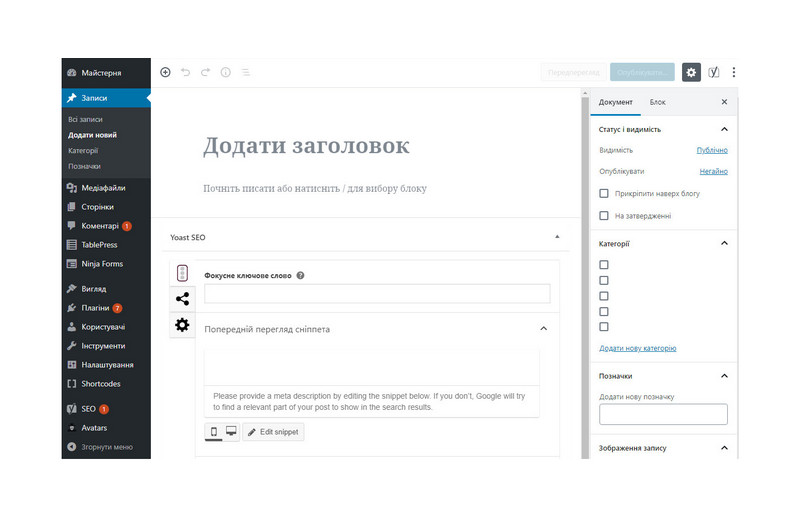

Що таке CMS
Абревіатура CMS розшифровується як «Content Management Software» ( «програмне забезпечення для управління вмістом», програма розробки сайту). У нашій країні прийнято останню букву «S» розшифровувати як «System».
CMS з'явилися не так давно. Першою системою прийнято вважати Vignette, яка з'явилася на заході в 1995 році. У нас в країні рішення по управлінню вмістом з'явилися значно пізніше.
Необхідність систем управління для власників сайтів почала даватися взнаки в той момент, коли кількість матеріалів на веб-сайтах почала стрімко зростати. Це призвело до того, що традиційні «ручні» технології створення і підтримки сайтів, коли сайт складався з статичних сторінок і набору додаткових спеціалізованих скриптів, стали не встигати за швидко змінними умовами бізнесу. Введення даних на сайт вимагало (як мінімум) знання технологій HTML / CSS верстки, зміни структури сайтів були пов'язані з каскадним зміною великої кількості взаємозв'язаних сторінок. Різні автоматизовані механізми, на зразок гостьових книг і новинних стрічок, упроваджені на сайтах як окремі скрипти і, як правило, написані різними фахівцями, перестали задовольняти вимогам безпеки. На багатьох сайтах стали з'являтися «зоопарки» з різних технологій і підходів до створення сайтів, тому виникла потреба з одного боку в уніфікації програмних рішень, а з іншого в розділенні дизайну і вмісту на дві незалежні складові.
CMS дійсно розділяють сайти на дві складові: дизайн (зовнішній вигляд сайту в цілому, окремих сторінок, конкретних блоків інформації) і вміст (контент). Дизайн сайту, як правило «зашитий» в шаблони і змінюється значно рідше, ніж контент. Для введення контенту не потрібно спеціальних знань, а прості прийоми оформлення тексту знає практично кожен, хто працював в Microsoft Office.
Що таке cms з точки зору користувачів і розробників сайтів?
Таким чином, системи управління контентом вирішують дві основні задачі. З точки зору користувачів - це інструмент, який дозволяє публікувати новини, розміщувати нові сторінки на сайті і проводити інші операції над вмістом через зручний інтерфейс. При цьому користувач може не володіти технологіями створення сайту, але він обов'язково повинен розуміти, як влаштований сайт.
З точки зору тих, хто створює сайти - це інструмент, який прискорює створення складних сайтів, дозволяючи компонувати рішення з готових блоків, змінюючи в певних межах логіку роботи і оформлення.
Як правило, система управління cms це окремий інтерфейс, призначений для управління сайтом. Він може бути реалізований як веб-додаток, коли користувач входить в адмінзону свого сайту через звичайний браузер за певною адресою, або як окреме Windows-додаток, що вимагає інсталяції. Різні підходи мають різні переваги і недоліки.
#Верстка блоку с шаблону Bazar
Maecenas lacinia felis nec placerat sollicitudin. Quisque placerat dolor at scelerisque imperdiet. Phasellus tristique felis dolor.
Maecenas elementum in risus sed condimentum. Duis convallis ante ac tempus maximus. Fusce malesuada sed velit ut dictum. Morbi faucibus vitae orci at euismod. Integer auctor augue in erat vehicula, quis fermentum ex finibus.
Mauris pretium elit a dui pulvinar, in ornare sapien euismod. Nullam interdum nisl ante, id feugiat quam euismod commodo. Sed ultrices lectus ut iaculis rhoncus. Aenean non dignissim justo, at fermentum turpis. Sed molestie, ligula ut molestie ultrices, tellus ligula viverra neque, malesuada consectetur diam sapien volutpat risus. Quisque eget tortor lobortis, facilisis metus eu, elementum est. Nunc sit amet erat quis ex convallis suscipit. ur ridiculus mus.